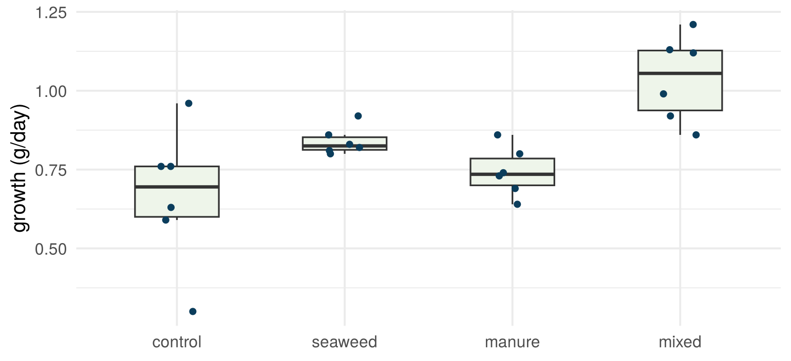
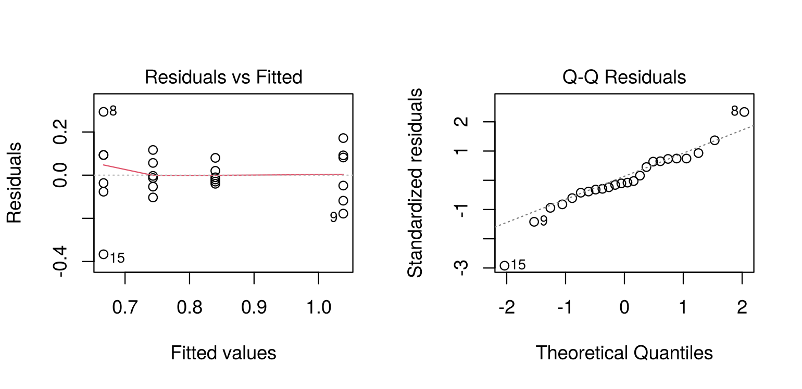
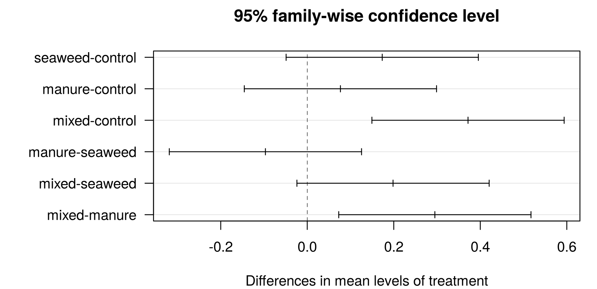

aov(), and
check its assumptions on the residuals;oneway.test()) when
variances differ, and the Kruskal–Wallis test with
pairwise Wilcoxon tests when data are not suitable for
ANOVA.aov(), et vérifier ses conditions sur les
résidus ;oneway.test()) quand les variances diffèrent, et le test
de Kruskal–Wallis avec des tests de Wilcoxon
par paires quand les données ne conviennent pas à l’ANOVA.Sea-cucumber feeding experiment
(sea_cucumber_pens.csv, simulated). A community farm of
Holothuria scabra tested four feeding treatments in 2026:
control (no added food), dried
seaweed, composted manure, and
mixed (seaweed + manure). 24 pens of
the same size each received 30 juveniles; the treatments were
assigned at random, 6 pens each (Session 1). After 90
days, all animals were weighed. One row = one pen (the
experimental unit): initial mean weight (g), mean growth (g per day),
final mean weight, number and % of survivors.
Expérience d’alimentation des holothuries
(sea_cucumber_pens.csv, simulé). Une ferme communautaire
d’Holothuria scabra a testé quatre traitements en 2026 :
control (pas d’apport), seaweed
(algues séchées), manure (fumier composté) et
mixed (algues + fumier). 24 enclos de
même taille ont reçu chacun 30 juvéniles ; les traitements ont été
attribués au hasard, 6 enclos chacun (séance 1). Après
90 jours, tous les animaux ont été pesés. Une ligne = un enclos
(l’unité expérimentale) : poids moyen initial (g), croissance moyenne (g
par jour), poids moyen final, nombre et % de survivants.
sc <- read.csv("data/sea_cucumber_pens.csv")
sc$treatment <- factor(sc$treatment, levels = c("control", "seaweed", "manure", "mixed"))
sc %>% group_by(treatment) %>% summarise(n = n(), mean = mean(growth_g_day), sd = sd(growth_g_day))#> # A tibble: 4 × 4
#> treatment n mean sd
#> <fct> <int> <dbl> <dbl>
#> 1 control 6 0.667 0.221
#> 2 seaweed 6 0.84 0.0443
#> 3 manure 6 0.743 0.0781
#> 4 mixed 6 1.04 0.136ggplot(sc, aes(treatment, growth_g_day)) +
geom_boxplot(width = 0.5, outlier.shape = NA, fill = "#eef5ea") +
geom_jitter(width = 0.1, height = 0, colour = "#0b3d5c") +
labs(x = NULL, y = "growth (g/day)") + theme_c()
Four treatments give 6 pairs. With 6 independent tests at α = 0.05, the probability of at least one false positive when all treatments are in fact equal is 1 − 0.95⁶ = 0.26 — not 0.05 (Session 4, “at least one”). The ANOVA asks one global question first — “are all the means equal?” — at α = 0.05; only if the answer is no do we look for which ones differ, with a method that controls the error rate.
Quatre traitements donnent 6 paires. Avec 6 tests indépendants au seuil α = 0,05, la probabilité d’au moins un faux positif quand tous les traitements sont en réalité égaux vaut 1 − 0,95⁶ = 0.26 — pas 0,05 (séance 4, « au moins un »). L’ANOVA pose d’abord une question globale — « toutes les moyennes sont-elles égales ? » — au seuil α = 0,05 ; seulement si la réponse est non, on cherche lesquelles diffèrent, avec une méthode qui contrôle le taux d’erreur.
H0: μ_control = μ_seaweed = μ_manure = μ_mixed. H1: at least one mean differs.
ANOVA splits the total variability of growth (sum of squared deviations from the grand mean, SS total) into:
Each is divided by its degrees of freedom to give a mean square (MS). The ratio F = MS between / MS within is close to 1 if H0 is true, and large if group means differ more than the noise allows.
H0 : μ_control = μ_seaweed = μ_manure = μ_mixed. H1 : au moins une moyenne diffère.
L’ANOVA découpe la variabilité totale de la croissance (somme des carrés des écarts à la moyenne générale, SC totale) en :
Chacune est divisée par ses degrés de liberté pour donner un carré moyen (CM). Le rapport F = CM entre / CM intra est proche de 1 si H0 est vraie, et grand si les moyennes des groupes diffèrent plus que le bruit ne le permet.
grand <- mean(sc$growth_g_day)
gm <- ave(sc$growth_g_day, sc$treatment) # each pen gets the mean of its group
ss_between <- sum((gm - grand)^2)
ss_within <- sum((sc$growth_g_day - gm)^2)
k <- 4; N <- nrow(sc)
F_ratio <- (ss_between / (k - 1)) / (ss_within / (N - k))
c(SS_between = ss_between, SS_within = ss_within, F = F_ratio)#> SS_between SS_within F
#> 0.4646458 0.3781500 8.1915613#> [1] 0.0009410842Functions and arguments used here
| Function / argument | What it does | Value it expects |
|---|---|---|
ave(x, g) |
replaces each value by the mean of its group (same length as
x) |
|
pf(q, df1, df2, lower.tail = FALSE) |
P(F > q) for the F distribution: the p-value of an ANOVA |
Fonctions et arguments utilisés ici
| Fonction / argument | Ce qu’il fait | Valeur attendue |
|---|---|---|
ave(x, g) |
remplace chaque valeur par la moyenne de son groupe (même longueur
que x) |
|
pf(q, df1, df2, lower.tail = FALSE) |
P(F > q) pour la loi F : la p-value d’une ANOVA |
#> Df Sum Sq Mean Sq F value Pr(>F)
#> treatment 3 0.4646 0.15488 8.192 0.000941 ***
#> Residuals 20 0.3782 0.01891
#> ---
#> Signif. codes: 0 '***' 0.001 '**' 0.01 '*' 0.05 '.' 0.1 ' ' 1Functions and arguments used here
| Function / argument | What it does | Value it expects |
|---|---|---|
aov(formula, data) |
fits an analysis of variance; summary() prints the
ANOVA table |
|
formula |
numeric ~ factor (the factor can have 2 or more
groups) |
column names |
Fonctions et arguments utilisés ici
| Fonction / argument | Ce qu’il fait | Valeur attendue |
|---|---|---|
aov(formula, data) |
ajuste une analyse de variance ; summary() affiche le
tableau d’ANOVA |
|
formula |
numérique ~ facteur (le facteur peut avoir 2 groupes ou
plus) |
noms de colonnes |
Reading the table. Row treatment: Df =
k − 1 = 3, Sum Sq = SS between, Mean Sq, F value, Pr(>F) = the
p-value. Row Residuals: Df = N − k = 20, SS within. We
found the same numbers by hand. Here p < 0.001: at least
one treatment mean differs.
Effect size: η² (eta squared) = SS between / SS total, the share of the variability explained by the treatments.
Lecture du tableau. Ligne treatment :
Df = k − 1 = 3, Sum Sq = SC entre, Mean Sq, F value, Pr(>F) = la
p-value. Ligne Residuals : Df = N − k = 20, SC intra. On
retrouve les nombres calculés à la main. Ici p < 0,001 : au
moins une moyenne de traitement diffère.
Taille d’effet : η² (êta carré) = SC entre / SC totale, la part de la variabilité expliquée par les traitements.
#> [1] 0.55ANOVA has the same assumptions as the t-test, checked on the residuals (each value minus its group mean):
bartlett.test() (sensitive to non-normality) or Levene’s
test (car::leveneTest()) exist, but the graph is usually
enough.With equal group sizes (a balanced design, as here), ANOVA is quite robust to moderate departures.
L’ANOVA a les mêmes conditions que le test t, vérifiées sur les résidus (chaque valeur moins la moyenne de son groupe) :
bartlett.test() (sensible à la
non-normalité) ou le test de Levene (car::leveneTest())
existent, mais le graphique suffit en général.Avec des groupes de même taille (plan équilibré, comme ici), l’ANOVA est assez robuste à des écarts modérés.
par(mfrow = c(1, 2))
plot(fit, which = 1) # residuals vs fitted
plot(fit, which = 2) # QQ plot of residuals
#> control seaweed manure mixed
#> 0.22141966 0.04427189 0.07814516 0.13614943#>
#> Bartlett test of homogeneity of variances
#>
#> data: growth_g_day by treatment
#> Bartlett's K-squared = 11.371, df = 3, p-value = 0.009878Functions and arguments used here
| Function / argument | What it does | Value it expects |
|---|---|---|
plot(fit, which) |
diagnostic plots of a fitted model: 1 residuals vs
fitted, 2 QQ plot of residuals (also for lm(),
Session 10) |
1 to 6 |
par(mfrow = c(1, 2)) |
base R: the next plots are placed in 1 row × 2 columns; reset with
c(1, 1) |
|
bartlett.test(formula, data) |
test of H0: equal variances in all groups | |
residuals(fit) |
the residuals, if you want to plot them yourself |
Fonctions et arguments utilisés ici
| Fonction / argument | Ce qu’il fait | Valeur attendue |
|---|---|---|
plot(fit, which) |
graphiques de diagnostic d’un modèle ajusté : 1 résidus
vs valeurs ajustées, 2 QQ plot des résidus (aussi pour
lm(), séance 10) |
1 à 6 |
par(mfrow = c(1, 2)) |
R de base : les graphiques suivants sont placés sur 1 ligne × 2
colonnes ; remettre avec c(1, 1) |
|
bartlett.test(formula, data) |
test de H0 : variances égales dans tous les groupes | |
residuals(fit) |
les résidus, si vous voulez les tracer vous-même |
The residuals look roughly normal, but the spread is not equal: control pens vary about five times more than seaweed pens (SD ratio ≈ 5, Bartlett p = 0.01). SDs computed from 6 pens are themselves imprecise, but the gap is large, so we check the conclusion with Welch’s ANOVA, which does not assume equal variances (the same idea as Welch’s t-test):
Les résidus semblent à peu près normaux, mais la dispersion n’est pas égale : les enclos témoins varient environ cinq fois plus que les enclos à algues (rapport des ET ≈ 5, Bartlett p = 0.01). Des ET calculés sur 6 enclos sont eux-mêmes imprécis, mais l’écart est grand ; on vérifie donc la conclusion avec l’ANOVA de Welch, qui ne suppose pas des variances égales (la même idée que le test t de Welch) :
#>
#> One-way analysis of means (not assuming equal variances)
#>
#> data: growth_g_day and treatment
#> F = 7.3431, num df = 3.0000, denom df = 9.9258, p-value = 0.007013Functions and arguments used here
| Function / argument | What it does | Value it expects |
|---|---|---|
oneway.test(formula, data, var.equal) |
one-way comparison of means; var.equal = FALSE
(default) = Welch’s ANOVA |
Fonctions et arguments utilisés ici
| Fonction / argument | Ce qu’il fait | Valeur attendue |
|---|---|---|
oneway.test(formula, data, var.equal) |
comparaison de moyennes à un facteur ;
var.equal = FALSE (défaut) = ANOVA de Welch |
Welch’s ANOVA still gives p = 0.007: the conclusion “feeds differ” does not depend on the equal-variance assumption. When both analyses agree, report the ANOVA and mention the check; when they disagree, report Welch’s.
L’ANOVA de Welch donne encore p = 0.007 : la conclusion « les aliments diffèrent » ne dépend pas de la condition de variances égales. Quand les deux analyses concordent, rapportez l’ANOVA et mentionnez la vérification ; quand elles divergent, rapportez celle de Welch.
After a significant ANOVA, Tukey’s Honest Significant Difference compares all pairs of groups, with CIs and p-values adjusted so that the risk of at least one false positive over all pairs stays at 5 %.
Après une ANOVA significative, la différence franchement significative (HSD) de Tukey compare toutes les paires de groupes, avec des IC et des p-values ajustés pour que le risque d’au moins un faux positif sur toutes les paires reste à 5 %.
#> Tukey multiple comparisons of means
#> 95% family-wise confidence level
#>
#> Fit: aov(formula = growth_g_day ~ treatment, data = sc)
#>
#> $treatment
#> diff lwr upr p adj
#> seaweed-control 0.17333333 -0.04886941 0.3955361 0.1620665
#> manure-control 0.07666667 -0.14553608 0.2988694 0.7700640
#> mixed-control 0.37166667 0.14946392 0.5938694 0.0007641
#> manure-seaweed -0.09666667 -0.31886941 0.1255361 0.6232480
#> mixed-seaweed 0.19833333 -0.02386941 0.4205361 0.0907992
#> mixed-manure 0.29500000 0.07279726 0.5172027 0.0068723
Functions and arguments used here
| Function / argument | What it does | Value it expects |
|---|---|---|
TukeyHSD(fit, conf.level) |
all pairwise differences of an aov() fit, with
family-wise CIs and adjusted p-values (p adj) |
an aov object |
plot(tk, las = 1) |
draws the CIs of the differences; those not crossing 0 are
significant; las = 1 = horizontal labels |
Fonctions et arguments utilisés ici
| Fonction / argument | Ce qu’il fait | Valeur attendue |
|---|---|---|
TukeyHSD(fit, conf.level) |
toutes les différences par paires d’un ajustement
aov(), avec IC de famille et p-values ajustées
(p adj) |
un objet aov |
plot(tk, las = 1) |
trace les IC des différences ; ceux qui ne coupent pas 0 sont
significatifs ; las = 1 = étiquettes horizontales |
Only the mixed feed differs clearly from control and from manure; seaweed alone and manure alone are not distinguishable from the control with 6 pens each. Report: “Growth differed among feeds (one-way ANOVA, F₃,₂₀ = 8.19, p < 0.001, η² = 0.55). Pens receiving the mixed feed grew 0.37 g/day faster than controls (Tukey HSD, 95 % CI 0.15–0.59, p < 0.001).”
Seul l’aliment mixed diffère nettement du témoin et du fumier ; les algues seules et le fumier seul ne se distinguent pas du témoin avec 6 enclos chacun. Rédaction : « La croissance différait entre aliments (ANOVA à un facteur, F₃,₂₀ = 8,19, p < 0,001, η² = 0,55). Les enclos recevant l’aliment mixte ont grandi 0,37 g/jour plus vite que les témoins (HSD de Tukey, IC 95 % 0,15–0,59, p < 0,001). »
Survival percentages of 30 animals per pen are bounded (0–100), discrete and may be skewed. The Kruskal–Wallis test is the rank version of the one-way ANOVA (and the extension of the Wilcoxon rank-sum test to more than 2 groups). After a significant result, pairwise Wilcoxon tests with a p-value adjustment (Holm’s method) tell which groups differ.
Les pourcentages de survie de 30 animaux par enclos sont bornés (0–100), discrets et peuvent être asymétriques. Le test de Kruskal–Wallis est la version sur les rangs de l’ANOVA à un facteur (et l’extension du test de Wilcoxon des rangs à plus de 2 groupes). Après un résultat significatif, des tests de Wilcoxon par paires avec un ajustement des p-values (méthode de Holm) indiquent quels groupes diffèrent.
#> control seaweed manure mixed
#> 81.65 83.30 70.00 73.30#>
#> Kruskal-Wallis rank sum test
#>
#> data: survival_pct by treatment
#> Kruskal-Wallis chi-squared = 9.3539, df = 3, p-value = 0.02494#>
#> Pairwise comparisons using Wilcoxon rank sum test with continuity correction
#>
#> data: sc$survival_pct and sc$treatment
#>
#> control seaweed manure
#> seaweed 0.742 - -
#> manure 0.093 0.214 -
#> mixed 0.204 0.429 0.561
#>
#> P value adjustment method: holmFunctions and arguments used here
| Function / argument | What it does | Value it expects |
|---|---|---|
kruskal.test(formula, data) |
Kruskal–Wallis rank test: do the groups come from the same distribution? | |
pairwise.wilcox.test(x, g, p.adjust.method, exact) |
Wilcoxon rank-sum tests for all pairs of groups, with adjusted p-values (a table) | |
p.adjust.method |
how p-values are adjusted for the number of tests (Session 11):
"holm" (default, recommended), "bonferroni",
"BH"… |
Fonctions et arguments utilisés ici
| Fonction / argument | Ce qu’il fait | Valeur attendue |
|---|---|---|
kruskal.test(formula, data) |
test des rangs de Kruskal–Wallis : les groupes viennent-ils de la même distribution ? | |
pairwise.wilcox.test(x, g, p.adjust.method, exact) |
tests de Wilcoxon des rangs pour toutes les paires de groupes, avec p-values ajustées (un tableau) | |
p.adjust.method |
comment les p-values sont ajustées pour le nombre de tests (séance
11) : "holm" (défaut, recommandé),
"bonferroni", "BH"… |
Kruskal–Wallis detects a difference, but after adjustment no single pair is clearly different: with 6 pens per group, pairwise rank tests have little power. This is common — report it honestly (“survival differed among treatments overall, mainly lower with manure, but pairwise differences were not significant after adjustment”).
Kruskal–Wallis détecte une différence, mais après ajustement aucune paire n’est nettement différente : avec 6 enclos par groupe, les tests par paires sur les rangs ont peu de puissance. C’est fréquent — rapportez-le honnêtement (« la survie différait globalement entre traitements, plus faible surtout avec le fumier, mais les différences par paires n’étaient pas significatives après ajustement »).
The same tools apply to the 36 reef sites (Session 2), with two differences: biomass is right-skewed, so we analyse log(biomass); and management was not assigned at random, so a difference is an association (Session 1).
Les mêmes outils s’appliquent aux 36 sites récifaux (séance 2), avec deux différences : la biomasse est asymétrique à droite, on analyse donc log(biomasse) ; et la gestion n’a pas été attribuée au hasard, une différence est donc une association (séance 1).
rf <- read.csv("data/reef_fish_sites.csv")
fit_rf <- aov(log(biomass_kg_ha) ~ management, data = rf)
summary(fit_rf)#> Df Sum Sq Mean Sq F value Pr(>F)
#> management 2 7.023 3.512 18.15 4.82e-06 ***
#> Residuals 33 6.384 0.193
#> ---
#> Signif. codes: 0 '***' 0.001 '**' 0.01 '*' 0.05 '.' 0.1 ' ' 1tk_rf <- TukeyHSD(fit_rf)$management
round(cbind(ratio = exp(tk_rf[, "diff"]), lower = exp(tk_rf[, "lwr"]), upper = exp(tk_rf[, "upr"]), p = tk_rf[, "p adj"]), 3)#> ratio lower upper p
#> No-take-LMMA 1.516 0.976 2.356 0.067
#> Open access-LMMA 0.519 0.334 0.806 0.002
#> Open access-No-take 0.342 0.220 0.531 0.000On the log scale, differences become ratios after
exp(): no-take sites have about 2.9 times the biomass of
open-access sites.
Sur l’échelle log, les différences deviennent des
rapports après exp() : les sites en
réserve intégrale ont environ 2.9 fois la biomasse des sites en libre
accès.
With sea_cucumber_pens.csv (treatment as a factor,
levels control, seaweed, manure, mixed):
final_weight_g) by treatment: F value (3
decimals) and p-value (5 decimals).With reef_fish_sites.csv:
Kruskal-Wallis chi-squared, 3
decimals).Avec sea_cucumber_pens.csv (traitement en facteur,
niveaux control, seaweed, manure, mixed) :
final_weight_g) par traitement : valeur de F (3
décimales) et p-value (5 décimales).Avec reef_fish_sites.csv :
Kruskal-Wallis chi-squared, 3
décimales).Q3:
ss <- summary(fit)[[1]][["Sum Sq"]]; ss[1] / sum(ss).
Q4–5: the row mixed-seaweed of
TukeyHSD(fit)$treatment.
Q3 :
ss <- summary(fit)[[1]][["Sum Sq"]]; ss[1] / sum(ss).
Q4–5 : la ligne mixed-seaweed de
TukeyHSD(fit)$treatment.
sc <- read.csv("data/sea_cucumber_pens.csv")
sc$treatment <- factor(sc$treatment, levels = c("control", "seaweed", "manure", "mixed"))
fw <- aov(final_weight_g ~ treatment, data = sc)
summary(fw) # 1, 2
ss <- summary(fw)[[1]][["Sum Sq"]]; ss[1] / sum(ss) # 3
TukeyHSD(fw)$treatment["mixed-seaweed", ] # 4, 5
rf <- read.csv("data/reef_fish_sites.csv")
summary(aov(species_richness ~ management, data = rf)) # 6
kruskal.test(fish_density ~ management, data = rf) # 7
# 8: inflates the family-wise false-positive risk 9: residuals 10: at least one mean differs